補正（写真をきれいに）
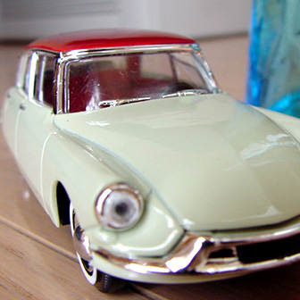
- すでに写っている質が変化するわけではありません
- デジタル処理できる範囲で、人間が見てきれいと感じる程度に変化させます
- 素材↓
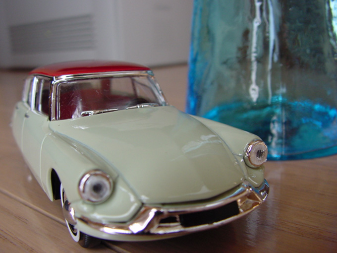
新規調整レイヤー
- 何度もやり直しができる色調補正のレイヤー
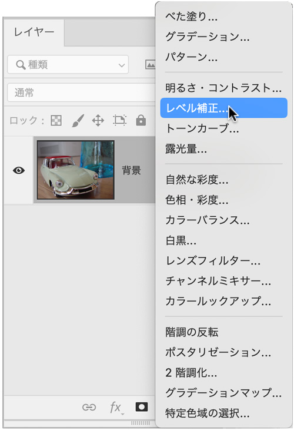
レベル補正
- おもに画像の「階調幅」を調整します
- ヒストグラムを参考に画像を適度な明るさに調整することができます
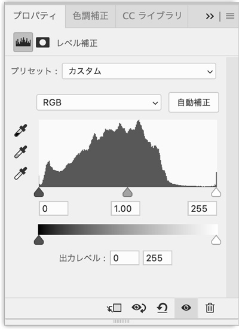
ヒストグラムを調整
以下の３ポイントを調整する- ハイライトポイント
- シャドウポイン
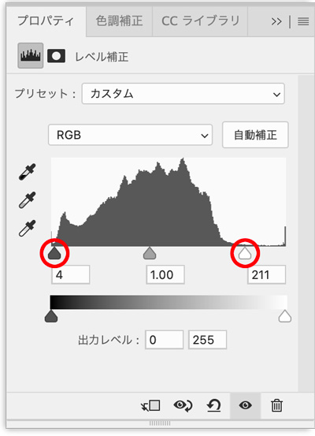
ハイライトポイントを左側に移動することで、画面の色調が「明るく」なります
シャドウ・ハイライト
- シャドウを明るくする、ハイライトを暗くする調整をします
- 素材↓
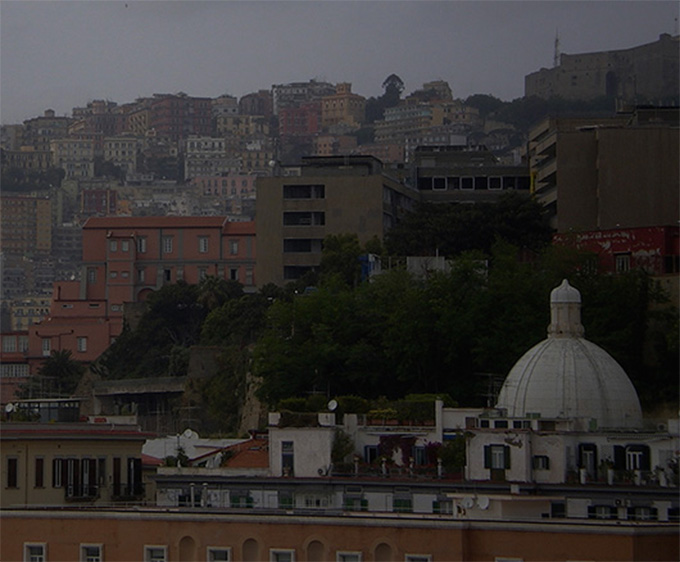
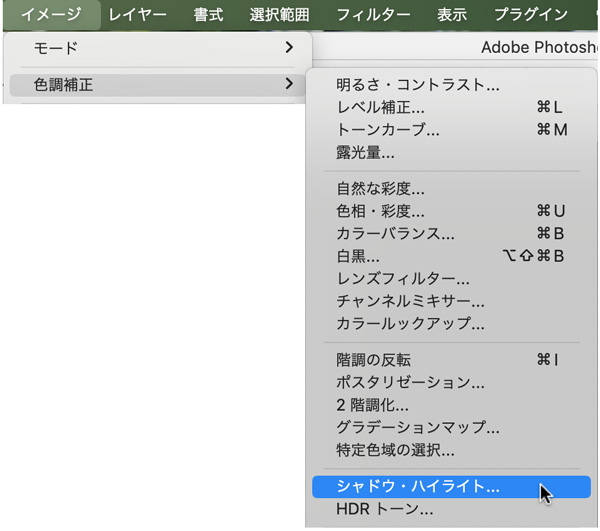
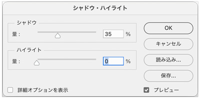
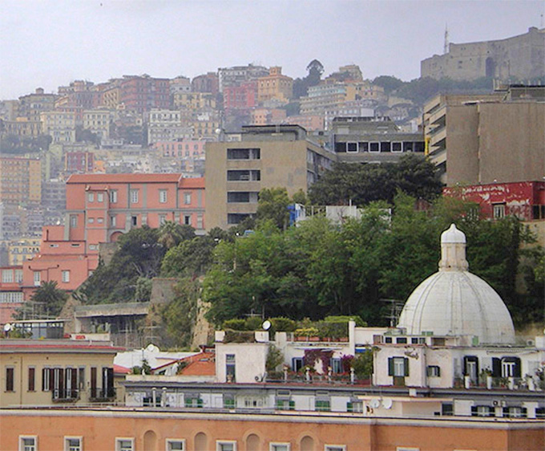
- コントラストが強くなるのが「レベル補正」
- 自然光のようになるのが「シャドウ・ハイライト」
明るさコントラストを調整する
- 画像の明るさの過不足を補ったり、メリハリ感を調整したりすることができます
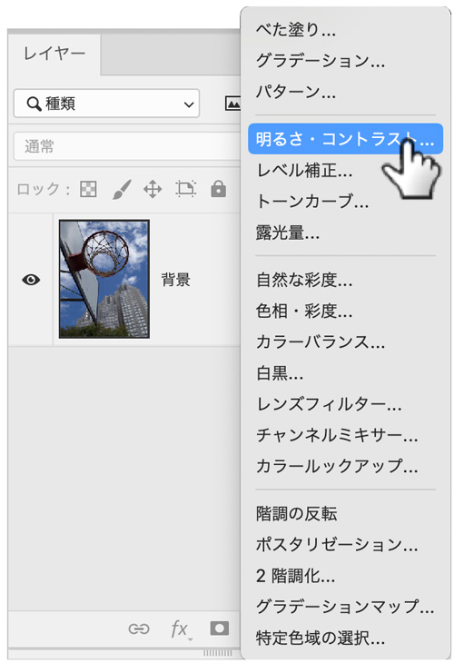
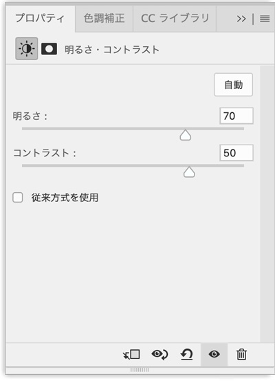